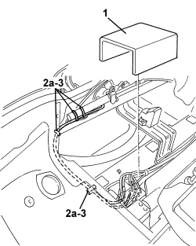
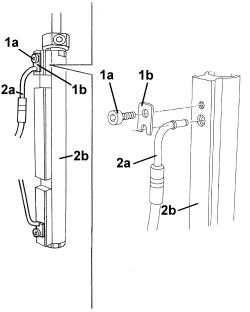
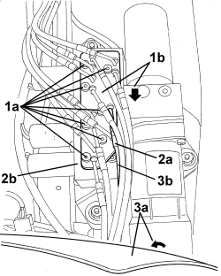
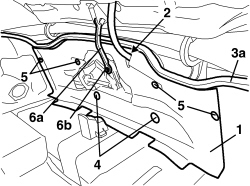

7030H84 PIPE FROM CONTROL UNIT TO HOOD COMPARTMENT COVER HYDRAULIC ACTUATOR (HOOD CONTRACTION MOVEMENT) - R.R.
- Path
- Procedures > 70 FITTINGS > 7030 SUN ROOF/GLASS PANEL > 7030H AUTOMATICALLY OPERATED HOOD > 7030H84 PIPE FROM CONTROL UNIT TO HOOD COMPARTMENT COVER HYDRAULIC ACTUATOR (HOOD CONTRACTION MOVEMENT) - R.R.
- Kind
- repair procedure (removal / refitting; the operation number is the code)
- Applies to
- engines: 2.2 JTS, 3.2 JTS; all production periods
- Interactive page
- https://sloeber94.github.io/elrnDB-aBrrSpdr/en/#/946004115
Applies to: engines: 2.2 JTS, 3.2 JTS; all production periods
 Removing
Removing
 Refitting
RefittingOp. 7040C11 HOOD HOUSING COMPARTMENT FLOOR TRIM - R.R.
Op. 7040C13 HOOD HOUSING COMPARTMENT REAR TRIM - R.R.
- Discharge the hydraulic system pressure.
Op. 0010T79 HOOD HYDRAULIC SYSTEM - DISCHARGE AND RESTORE PRESSURE
1. Working in the hood housing compartment on the right hand side, remove the hydraulic control unit sound insulation panel.
2. Mark the position of the retaining bands (2a) in relation to the pipes and the wiring (as a reference for refitting).
3.Cut the retaining bands.

Applies to: engines: 2.2 JTS, 3.2 JTS; all production periods
1. Working on the hydraulic actuator, undo the bolt (1a) and remove the plate (1b).
2. Disconnect the pipe (2a) from the actuator (2b).

Applies to: engines: 2.2 JTS, 3.2 JTS; all production periods
1. Working on the hydraulic control unit, undo the bolts (1a) and remove the plate (1b) in the direction of the arrow to release the pipes.
2. Disconnect the pipe (2a) from the hydraulic control unit (2b).
Applies to: engines: 2.2 JTS, 3.2 JTS; all production periods
3. Raise the side trim (3a) slightly and remove the contraction pipe (3b) for the hood housing compartment cover hydraulic actuator.

Applies to: engines: 2.2 JTS, 3.2 JTS; all production periods
Refitting
Removing- Check that the hood housing compartment cover hydraulic actuator contraction pipe is not damaged.
- Position the hood housing compartment cover hydraulic actuator contraction pipe.
- Connect the pipe to the hydraulic control unit.
- Move the plate into the pipe retaining position, then tighten the bolts.
- Connect the pipe to the actuator, then fit the plate and secure it using the bolt.
- Fit the wiring and pipe retaining bands, ensuring they are in the correct positions marked when dismantling.
- Position the side trim.
1. Position the rear trim.
2. Apply adhesive tape to the back of the cut area of the trim.
3. Attach the rear trim to the perimeter seal (3a).
4. Tighten the plastic nuts.
5. Attach the retaining buttons.
6. Connect the lower end (6a) of the rod to the mechanism, then fit the spacer and tighten the rod fixing nut (6b).

Applies to: engines: 2.2 JTS, 3.2 JTS; all production periods
- Restore the hydraulic system pressure.
Op. 7030H03 HOOD MANUAL OPENING FOLLOWING DEACTIVATION OF HYDRAULIC SYSTEM - CARRY OUT PROCEDURE
- Carry out several opening/closing cycles of the hood to bleed the hydraulic system.
Op. 0010T81 HOOD HYDRAULIC SYSTEM FLUID - CHECK LEVEL AND TOP UP IF NECESSARY
- Check that the hood is working correctly.
Topics linked from this page (5)
- 0010T79 HOOD HYDRAULIC SYSTEM - DISCHARGE AND RESTORE PRESSURE
- 0010T81 HOOD HYDRAULIC SYSTEM FLUID - CHECK LEVEL AND TOP UP IF NECESSARY
- 7030H03 HOOD MANUAL OPENING FOLLOWING DEACTIVATION OF HYDRAULIC SYSTEM - CARRY OUT PROCEDURE
- 7040C11 HOOD HOUSING COMPARTMENT FLOOR TRIM - R.R.
- 7040C13 HOOD HOUSING COMPARTMENT REAR TRIM - R.R.